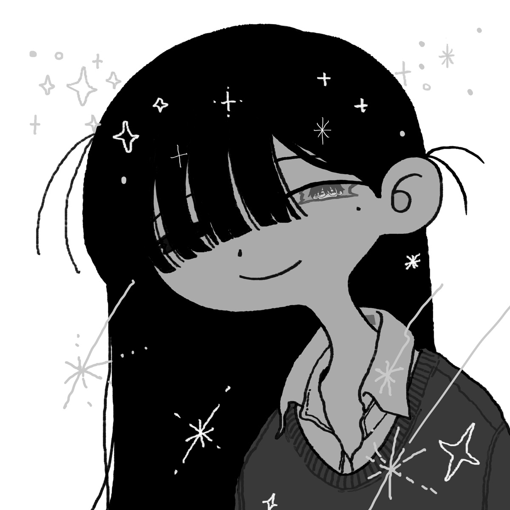

English Lyrics
[Verse 1]
There huddled love
And fostered a token monster
I have to love it
From "Didn't work" to "I hesitated"
Why is it always me?
Thinking like that, bath time went by in a blink
All were beautiful but I hated them all
[Chorus]
No matter how hard I try, I'm an ordinary guy
My whole life goes bibbidi-bobbi-boo
I'm uttering something helpless in a daydream
I'm gonna pop one last question of the century
What if she hates it?
And then some, I'm thinking
What if she hates it?
And then some, I'm thinking
[Verse 2]
Did she laugh?
Did love rush here?
I must love it
From "Didn't work" to "I was scared"
Why is it always you?
Thinking like that, I'm tired of injury time
I hated them all, I hated them all
[Verse 3]
Not a big deal, it's like that in most cases
This time again, are we ending at my turn?
Talking about stability, relationship is somehow
Ambiguous and uncool, but I'm so into you
But you'll never know
Probably we're still short of something
Your restless emotions
Welcome to spill them out, this and that
[Bridge]
I'm absolutely mad about you
I'm addicted to you, my universe
There's nothing I can do, so unwillingly enough
Let's escape to some unknown star
[Chorus]
No matter how hard I try, I'm an ordinary guy
My whole life goes bibbidi-bobbi-boo
I'm uttering something helpless in a daydream
I'm gonna pop one last question of the century
What if she hates it?
And then some, I'm thinking about
What if she hates it?
And then some, I'm thinking about
Romanized Lyrics
[Verse 1]
Soko ni ai, takatta
Katachi dake no monsutaa ga sodatta
Sore wo aisanakucha
"Dame datta" kara "tameratta"
Doushite, boku bakka
Toka, omoeta basu taimu mo tsukanoma
Dore mo kirei datta ga, dore mo kirai datta
[Chorus]
Dou, ganbatte mo boku wa futsuu
Kono, shougai zenbu bibidi babibuu
Doushiyou mo nai koto haku, hakuchuumu ni
Konseiki saigo no puropoozu wo shiyou
Kirawarechattara, doushiyou
Toka, kangaeten no iroiro
Kirawarechattara, doushiyou
Toka, kangaeten no iroiro
[Verse 2]
Waratta?
Koko ni ai, asetta?
Sore wo aisanakucha
"Dame datta" kara "kowakatta"
Nande, anata bakka
Toka, omoeta rosutaimu mo tsukareta
Dore mo kirai datta, dore mo kirai datta
(Fo-fo-fo)
[Verse 3]
Nante koto nai yo, daitai wa sou yo
Konkai mo boku no taan de shuuryou?
Antei ga dou no, kankei wa dou mo
Aimai de yabuttai ga, zokkon
Demo ne, wakaranai yo (Mm)
Kitto, mada tarinai yo (Mm)
Ukiashidatteru, anata no kimochi wo
Hakidashichatte, iroiro
[Bridge]
Dou, kangaete mo kimi ni muchuu
Toriko ni nacchatteru boku no uchuu
Doushiyou mo nai kara nakunaku
Futari de shiranai hoshi ni demo nigemashou
[Chorus]
Dou, ganbatte mo boku wa futsuu
Kono, shougai zenbu bibidi babibuu
Doushiyou mo nai koto haku, hakuchuumu ni
Konseiki saigo no puropoozu wo shiyou
Kirawarechattara, doushiyou
Toka, kangaeten no iroiro
Kirawarechattara, doushiyou
Toka, kangaeten no iroiro